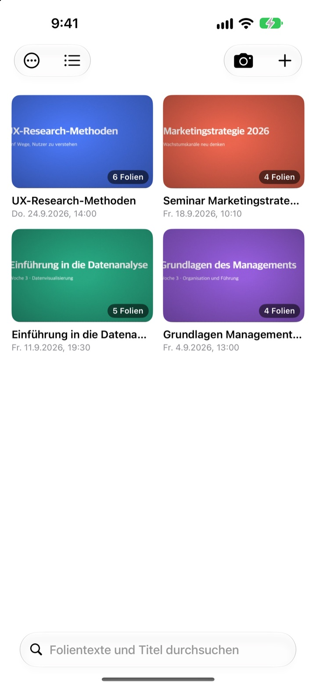
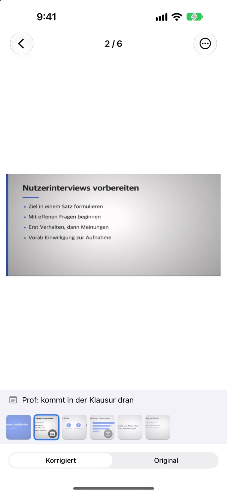
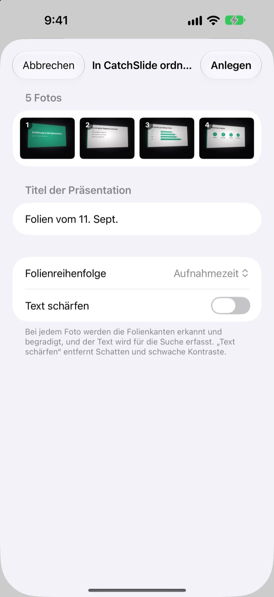
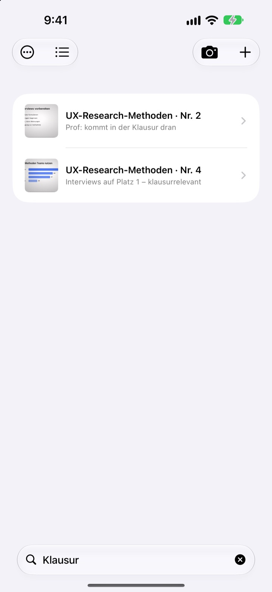

Schräg fotografiert.
Gerade gespeichert.
Die Kamera findet alle vier Ecken der Folie, richtet sie gerade aus und schneidet den Raum drumherum weg. Folien, die du nacheinander aufnimmst, landen in derselben Präsentation.
Einmal kaufen, alles nutzen. Kein Abo, kein Konto.

Selbst entzerren
Dieses Foto wurde schräg von einem Seitenplatz im Hörsaal aufgenommen. Die grüne Linie zeigt, wo die Ecken der Folie gefunden wurden.
Zum Lernen die Fotos geöffnet und die Folie nicht gefunden?
Folien aus der letzten Reihe sind immer schief und gehen zwischen Selfies und Kassenzetteln unter. Im stillen Hörsaal hält dich schon das Auslösegeräusch zurück. CatchSlide fotografiert lautlos, entzerrt jede Folie und hält sie nach Präsentation zusammen.
Gerade, sobald du auslöst
Die Kamera verfolgt die vier Ecken der Folie live und wird grün, sobald sie sitzen. Selbst schräg aufgenommen wirkt die Folie wie von vorn fotografiert, der Hintergrund ist weg.
Kein Auslösegeräusch. Mit Automatische Aufnahme wird jede neue Folie von selbst erfasst, verwackelte Bilder werden übersprungen.

Vorhandene Fotos in einem Rutsch
Wähle in der Fotos-App mehrere Bilder aus der Vorlesung und teile sie mit CatchSlide. Sie werden entzerrt und in Aufnahmereihenfolge als eine Präsentation abgelegt.Text schärfen entfernt Schatten und flauen Kontrast.

Ein Wort genügt
CatchSlide liest den Text jeder Folie direkt auf deinem Gerät. Auch Wochen später bringt dich ein einziges Wort zur richtigen Folie.
Notizen zu Folien sind ebenfalls durchsuchbar. Markiere ein paar mit Klausur, und der ganze Prüfungsstoff ist eine Suche entfernt.

In drei Schritten startklar
- 1
Kamera öffnen
Über die Kamerataste in der Liste, das Widget auf dem Home-Bildschirm oder den Sperrbildschirm.
- 2
Folie ins Bild nehmen
Werden die Ecken grün, auslösen oder die automatische Aufnahme machen lassen.
- 3
Nach Präsentation nachschlagen
Suchen, Notizen ergänzen und ein PDF zum Lernen exportieren.
Was du mit einer Präsentation machen kannst
- Aufnahme
- Nimm beim Fotografieren Ton auf und hör dir jede Folie ab dem Moment an, in dem du sie fotografiert hast
- Transkription
- Macht aus der Aufnahme Text, zeigt, was zu jeder Folie gesagt wurde, und fließt in die Suche ein
- KI-Zusammenfassung
- Fasst die Präsentation aus Folientext und Transkript zusammen (iOS 26 oder neuer auf Geräten mit Apple Intelligence)
- Lernunterlagen mit einer, zwei oder vier Folien pro Seite
- Markdown
- Ein .zip für Notion oder Obsidian
- PowerPoint
- Export als .pptx, das Transkript steht in den Sprechernotizen
- Zusammenführen
- Mehrere Präsentationen auswählen und zu einer verbinden
- iCloud-Abgleich
- Einschalten, um deine Präsentationen auf anderen Geräten mit derselben Apple ID zu sehen. Standardmäßig aus
- Widgets
- Öffnen die Kamera direkt vom Home- oder Sperrbildschirm
Texterkennung, Transkription und KI-Zusammenfassungen laufen auf deinem Gerät.
Einmal kaufen, alles drin
CatchSlide
- Lautlose Aufnahme, automatische Aufnahme und Entzerren
- Mehrere Fotos auf einmal aus der Fotos-App importieren
- Folien nach Präsentation, Suche in Text und Notizen
- Aufnahme, Transkription und KI-Zusammenfassung
- Export als PDF, Markdown und PowerPoint
- iCloud-Abgleich und Widgets
Trinkgeld (freiwillig)
- Wenn dir die App hilft, kannst du dem Entwickler ein kleines Trinkgeld geben
- Trinkgeld schaltet nichts frei. Alle Funktionen gibt es auch ohne
Zu finden unter Meine Angaben.
Kein Abo und keine kostenpflichtigen Zusatzfunktionen. Den Preis für dein Land findest du im App Store.
Häufige Fragen
Wie fotografiere ich eine Folie?
Öffne die Kamera und richte sie auf die Folie. Sobald die Ecken grün werden, löst du aus. Mit eingeschalteter automatischer Aufnahme wird jede neue Folie von selbst erfasst, sobald sie wechselt.
Gibt es ein Auslösegeräusch?
Nein. Das Bild wird direkt aus dem Kamerabild gespeichert, deshalb bleibt es in jedem Land lautlos.
Warum landen meine Fotos in einer Präsentation?
Machst du das nächste Foto innerhalb von 5 Minuten nach dem letzten, gilt es als Teil derselben Präsentation. Tippe in der Liste auf den Titel, um sie umzubenennen, und verbinde getrennte Präsentationen mit Präsentationen zusammenführen.
Kann ich Fotos hinzufügen, die ich schon gemacht habe?
Ja. Wähle sie in der Fotos-App aus und teile sie mit CatchSlide, oder tippe in der Liste auf ＋ und wähle Aus Fotos importieren. Sie werden entzerrt und in Aufnahmereihenfolge als eine Präsentation abgelegt.
Die Ecken wurden falsch erkannt.
Öffne die Folie, wähle im Menü ⋯ Ecken anpassen und zieh die vier Ecken an die richtige Stelle. Automatisch erkennen sucht sie neu, Ganzes Bild nimmt das komplette Foto. Das Original bleibt immer erhalten, du kannst es also jederzeit neu entzerren.
Kann ich den Text auf meinen Folien durchsuchen?
Gib oben in der Liste ein Wort ins Suchfeld ein. Durchsucht werden Folientext, Präsentationstitel, Notizen und Transkripte, und du springst direkt zur Folie. Die Texterkennung läuft auf deinem Gerät.
Wie exportiere ich ein PDF?
Öffne in einer Präsentation das Teilen-Menü, wähle Als PDF exportieren und entscheide dich für eine, zwei oder vier Folien pro Seite. Über das Teilen-Menü sicherst du es in Dateien oder schickst es an eine andere App.
Wie ändere ich die Reihenfolge oder lösche Folien?
Halte in einer Präsentation eine Folie gedrückt und zieh sie an ihren neuen Platz. Im selben Menü kannst du eine Folie löschen oder teilen, mit Auswählen löschst du mehrere auf einmal.
Wie funktionieren Aufnahme und KI-Zusammenfassung?
Schalte oben in der Kamera Aufnahme ein, dann behält jede Folie den Ton aus diesem Moment. In Notizen zur Präsentation erstellt Mit KI zusammenfassen eine Zusammenfassung aus Folientext und Transkript. Dafür brauchst du iOS 26 oder neuer auf einem Gerät mit Apple Intelligence.
Wo werden meine Folien und Aufnahmen gespeichert?
Auf deinem Gerät. In deine eigene iCloud gelangen sie nur, wenn du unter Meine Angaben Abgleichen einschaltest, und ein Konto brauchst du nicht. Mehr dazu in der Datenschutzerklärung.
Fragen, Fehler oder Ideen? Schreib an leeo@kakao.com.